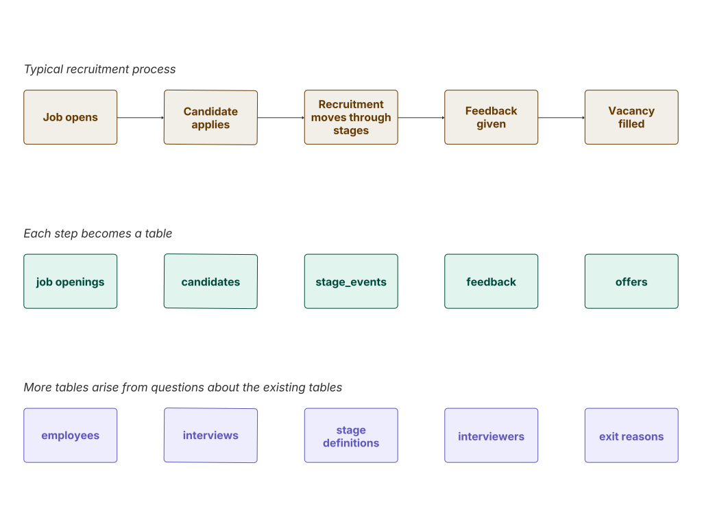

HR Recruitment - Database Design
A relational database designed to help a growing company identify and resolve bottlenecks in its hiring process.
Project Background
Kora Solutions is a fictional mid-sized tech company that grew from 150 to over 600 employees in three years. As the team scaled, recruitment became harder to manage. They were running a complex hiring process on a patchwork of tools with no reporting capabilities. As a result, roles that should have closed in six weeks were taking four to five months. Promising candidates were also dropping off or rejecting offers. Without structured data, the team had no way to tell where things were going wrong.
This project designs a relational database from scratch to give the team the structure they needed to capture the full recruitment process in enough detail to support four areas of analysis:
- Which stage of the recruitment process takes the longest?
- Which hiring managers or teams are contributing to delays?
- Why are candidates dropping out, and at what stage?
- Which sourcing channels produce the best outcomes?
Design Process
The design went through three phases: understanding the business process, mapping it to a schema, and checking that the schema could actually answer the questions that mattered.
The final schema is shown below.

Phase 1. Map the process first
A typical recruitment process was first written out as a plain sequence. These were then mapped to obvious tables such as job openings and candidates.

However, each table raised its own questions. If there is a feedback table, who is submitting that feedback? That points to an interviewers table. Those interviewers are employees of the company, so an employees table is needed too. And if there are interviewers, there must be interviews for them to be part of. Each question about the data led to another table until the schema was complete.
Phase 2. Connect the tables
Once the tables were identified, the next step was working out how they relate to each other. Each relationship was driven by the business questions, not just structural logic.
-
stage_events.changed_bylinks toemployeesso stage transitions can be attributed to a specific person. This makes it possible to break down time-in-stage by hiring manager or recruiter. -
source_idsits on bothcandidatesandapplications. On candidates it records how they first entered the system. On applications it records which channel drove that specific hire. -
exit_reason_idanddecline_reason_idlink to separate tables because mid-process drop-offs and offer declines are different problems that need to be analysed independently.
Phase 3. Decide what goes inside each table
With the structure in place, the focus shifted to which columns each table needed and how they should be constrained.
-
stage_events.changed_atis a timestamp rather than a date so time-in-stage can be calculated precisely. -
feedback.is_submittedis a boolean with a default offalse, so missing submissions show up as incomplete rather than simply not existing in the table. -
applications.exit_reason_idandcurrent_stage_idcan be null because an active application has neither of them yet. -
stage_events.from_stage_idcan also be null to handle the first transition, where there is no previous stage to reference.
How the Database Solves the Business Problem
-
Finding where time is being lost:
Every stage transition is recorded in
stage_eventswith a timestamp. This makes it possible to calculate exactly how long each application sat at each stage and spot where things consistently slow down. -
Attributing delays to specific people or teams:
Since
changed_byonstage_eventslinks every transition to an employee, time-in-stage can be broken down by hiring manager or recruiter. If one manager's applications consistently sit at review for two weeks while others take two days, that will show up in the data. -
Understanding why candidates are leaving:
application_exit_reasonsforces structured data entry through the category column This makes it possible to group drop-offs and track them over time. This way we are not just seeing that candidates leave but understanding why. -
Measuring sourcing effectiveness:
With
source_idon applications, the business can calculate conversion rates by channel. E.g How many LinkedIn applications resulted in a hire versus referrals? Which channel produces hires fastest? That informs where to put the sourcing budget.
Project Repository
The full project includes the schema design and SQL script